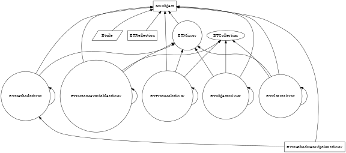

API Overview
Language Extensions
- NSObject (ETDoubleDispatch)
Objective-C double dispatch support.
This category provides a visitor which supports double-dispatch on all visited objects without implementing extra methods (such as accept: on the visited object side).
For a more detailed discussion, see -visit: .
Here is a visitor example:
@interface ETView : NSView @end @interface UIVisitor : NSObject @end @implementation ETView + (NSString *) typePrefix { return @"ET"; } @end // To start using the visitor, instantiate a visitor and do [visitor visit: someWindow] @implementation UIVisitor // visitXXX methods return id, but returning void would be valid - (id) visitWindow: (NSWindow *)aWindow { NSLog(@"Visiting window %@", aWindow); return [self visit: [aWindow contentView]]; } - (id) visitView: (NSView *)aView { NSLog(@"Visiting view %@", aView); for (NSView *subview in [aView subviews]) { [self visit: subview]; } return nil; } // Show how you can include the class name prefix and how such a method has // priority over a method without any type prefix such as -visitView:. - (id) visitETView: (ETView *)aSpecialView { NSLog(@"Visiting special view %@", aSpecialView); return nil; } @end
- NSInvocation (Etoile)
NSInvocation additions.
Description forthcoming.
- NSException (ETException)
Objective-C resumable and restartable exception support.
Description forthcoming.
- NSObject (ETPrototypes)
Objective-C prototype support.
Description forthcoming.
- NSObject (ETTrait)
Objective-C trait support.
Adds traits to Objective-C, to support class composition, in addition to inheritance. Traits allow methods to be added to another class.
The trait support in EtoileFoundation is based on:
- http://scg.unibe.ch/archive/papers/Scha03aTraits.pdf (original and short one)
- http://scg.unibe.ch/archive/papers/Duca06bTOPLASTraits.pdf (most recent and quite lengthy)
To get an introduction to the trait model and its various rules, you should read the short paper listed above.
Objective-C Trait Overview and Restrictions
The trait API supports both trait operators (exclusion, aliasing) and composite trait (a trait with subtraits). However there are two important restrictions:
- the super keyword must not be used in a trait method
- instances variables must not be accessed directly but only through accessors
If these restrictions are ignored, the code may compile, but will surely result in a buggy behavior at runtime.
With the current implementation, the limitations below should be kept in mind:
- trait applications don't take in account class methods
- no mechanism to declare and check non-trait methods required by trait methods (so you get a runtime exception instead)
Basic example and Terminology
To apply a trait, the basic API is +applyTraitFromClass: , and we use the terminology below:
- trait class
- the class which represents a trait and whose methods are called trait methods. The superclass methods are ignored if the class is used as a trait
- target class
- the class to which a trait class is applied to
- trait application
- a trait use that involves a trait class, a target class and operator-related arguments
For example:
// Traits should be applied as early as possible usually, that's why we use +initialize + (void) initialize { if (self != [MyClass class]) return; [aTargetClass applyTraitFromClass: aTraitClass]; }Detailed Examples
Here is a more complex example that applies two subtraits (BasicTrait and ComplexTrait) to another trait (CompositeTrait), then the resulting is applied to the target class (the receiver's class).
// -wanderWhere: from Basic method will be renamed -lost: in CompositeTrait [[CompositeTrait class] applyTraitFromClass: [BasicTrait class] excludedMethodNames: S(@"isOrdered") aliasedMethodNames: D(@"lost:", @"wanderWhere:")]; [[CompositeTrait class] applyTraitFromClass: [ComplexTrait class]]; [[self class] applyTraitFromClass: [CompositeTrait class]];As a concrete example, collection protocols are now implemented by most classes in Étoilé frameworks through two new ETCollectionTrait and ETMutableCollectionTrait.
Trait Validation
Trait applications are memorized to support composite traits and multiple trait applications to the same target class. Each time a trait is applied, it gets validated against the trait tree already bound to the target class. This ensures operators, overriding rule and flattening property will remain valid in the new trait tree. Unlike Squeak trait support, a trait can be applied at any time.
Mixin-style Application
In addition, it's possible to apply a trait without the overriding rule (that states target class overrides trait methods), which means methods in the target class can be replaced by methods from a trait.
// With YES, we allow the trait to override/replace methods in the target class [[self class] applyTraitFromClass: [BasicTrait class] excludedMethodNames: S(@"isOrdered") aliasedMethodNames: D(@"lost:", @"wanderWhere:") allowsOverride: YES];Trait applications are commutative, so the ordering in which you apply traits doesn't matter… but when this mixin-style composition is used, traits are not commutative and the ordering matters. That's why we'd rather discourage its use.
High Order Messaging and Blocks
- NSArray (ETCollectionHOM)
Higher-order messaging support for NSArray.
Description forthcoming.
- NSObject (ETHOM)
High-order messaging additions to NSObject.
Description forthcoming.
- NSDictionary (ETCollectionHOM)
Higher-order messaging support for NSDictionary.
Description forthcoming.
- NSIndexSet (ETCollectionHOM)
Higher-order messaging support for NSIndexSet.
Description forthcoming.
- NSMutableArray (ETCollectionHOM)
Higher-order messaging with in-place mutation support for NSMutableArray.
Description forthcoming.
- NSMutableDictionary (ETCollectionHOM)
Higher-order messaging with in-place mutation support for NSMutableDictionary.
Description forthcoming.
- NSMutableIndexSet (ETCollectionHOM)
Higher-order messaging with in-place mutation support for NSMutableIndexSet.
Description forthcoming.
- NSMutableSet (ETCollectionHOM)
Higher-order messaging with in-place mutation support for NSMutableSet.
Description forthcoming.
- NSObject (ETCollectionHOMIntegrationInformalProtocol)
Procotol to integrate high-order messaging with collections that require special treatments of their elements.
Description forthcoming.
- NSObject (ETEachHOM)
Extends ETCollection to support the 'each' higher-order message.
Description forthcoming.
- NSSet (ETCollectionHOM)
Higher-order messaging support for NSSet.
Description forthcoming.
- <ETCollectionHOM>
Higher-order messaging additions to ETCollection.
Description forthcoming.
- <ETCollectionHOMFilterIntegration>
ETCollection optional protocol to support the filter operation.
The ETCollectionHOMFilterIntegration protocol defines a hook that collections can use to tie into higher-order messaging if they need special treatment of their elements.
- <ETCollectionHOMIntegration>
ETCollection optional protocol to support map, zip and filter operations.
Description forthcoming.
- <ETCollectionHOMMapIntegration>
ETCollection optional protocol to support the map and zip operations.
The ETCollectionHOMMapIntegration protocol defines a hook that collections can use to tie into higher-order messaging if they need special treatment of their elements.
- <ETCollectionMutationHOM>
Higher-order messaging additions to ETCollectionMutation.
These higher-order methods mutate the receiver collection in-place.
Collection Additions
- NSIndexSet (Etoile)
Additions to NSIndexSet.
Description forthcoming.
- NSArray (Etoile)
Additions to NSArray.
Description forthcoming.
- NSMapTable (Etoile)
Additions to NSMapTable.
For now, this category is limited to NSDictionary-compatibility methods.
- ETKeyValuePair
A key/value association.
Key value pairs are used by EtoileUI to present and interact with keyed data structures.
If you put them in an array, the resulting data structure is roughly equivalent to an ordered dictionary or a multi-value collection.
For now, ETKeyValuePair doesn't support subclassing.
- NSIndexPath (Etoile)
Additions to NSIndexPath.
Description forthcoming.
- NSDictionary (Etoile)
Additions to NSDictionary.
Description forthcoming.
- ETHistory
A generic history class which can contain arbitary entries located in the past or the future.
ETHistory keeps a history of objects of some kind. After going back in time, it can go forward again towards the most recent object. Adding an object while at a historic point will discard the forward history.
It is also possible to give ETHistory an NSEnumerator to use as a lazy source for the forward history. This way, a collection of objects can be added as a "future", replacing the current forward history.
ETHistory supports ETCollection protocol, but not ETCollectionMutation which means -[NSObject isMutableCollection] returns NO and an history won't be considered as a mutable represented object by EtoileUI.
- NSMutableIndexSet (Etoile)
Additions to NSMutableIndexSet.
Description forthcoming.
- NSMutableArray (Etoile)
Additions to NSMutableArray.
Description forthcoming.
- NSArray (ETKeyValuePairRepresentation)
ETKeyValuePair-related extensions to NSArray.
Description forthcoming.
- NSObject (ETKeyValuePair)
ETKeyValuePair-related extensions to NSObject.
Description forthcoming.
- NSMutableDictionary (Etoile)
Extension to NSMutableDictionary for a common case where each key may map to several values.
Description forthcoming.
UUID
- ETUUID
An implementation of the Universally Unique Identifier standard.
When an ETUUID is instantiated, the underlying UUID is generated with the version 4 (aka random) generation scheme.
Take note the random scheme used on Linux and BSD platforms is based on a strong random number, unlike other platforms where a simpler random scheme is used. Which means collisions can occur on these platforms if you try to generate ETUUID in a tight loop.You can use -isEqual: to check the equality between two ETUUID instances.
ETUUID does not have a designated initializer.
- NSString (ETUUID)
UUID related additions to NSString.
Description forthcoming.
- NSUserDefaults (ETUUID)
Conveniency methods to easily read and write UUIDs in the default database.
Description forthcoming.
Metamodel
- ETCPrimitiveEntityDescription
A description of an entity bound to C attributes in the metamodel, and C values in the model.
Used to describe the (meta)model C primitives: float, BOOL, etc. See -[ETEntityDescription isCPrimitive] .
This class is used internally. You can possibly use it to support new primitives.
- ETMultiOptionsRole
Description of a property's role, whose value is restricted to a predetermined set.
Description forthcoming.
- ETValidationResult
A model validation result returned by the metamodel.
Helper class used as the return value of a validation, rather than passing pointers to objects and modifying them.
- ETPropertyDescription
Description of an entity's property.
A property description represents either an attribute or a relationship that belongs to an entity. Whether a property represents an attribute or relationships depends on the -type (the entity description for the propery value).
For a primitive type (see -[ETEntityDescription isPrimitive] ), the property is an attribute. For a non-primitive type, it is a relationship. For more explanations, -isAttribute and -isRelationship .
Conceptual Model
For a Metamodel overview, see ETModelElementDescription.
Model Description
ETPropertyDescription provides a large number of properties to describe the model, these properties can be split into three categories:
- Model Specification
- Properties to describe new and existing model and metamodel (the FAME-based metamodel)
- Persistency Specification
- Properties to describe persistent model and persistency rules (can be leveraged or not by a Persistency framework e.g. CoreObject)
- Model Presentation Specification
- Properties to describe model presentation in the UI, and model-driven generation (can be leveraged or not by a UI or Model Generation framework)
The Model Specification properties must be edited to get working metamodel.
Both Persistency and Model Presentation Specifications are optional. These additional specifications are usually generic enough to be reused by Persistency and UI frameworks other than CoreObject and EtoileUI.
Warning: For now, CoreObject validation rules are hardcoded into -[ETPropertyDescription checkConstraints:] , and this limits the possibility to reuse the Persistency Specification without CoreObject.
Additional properties or specification can be added by subclassing ETPropertyDescription. In the future, we will probably support extending the metamodel dynamically at run-time too.
Role and Validation
A role can be set to provide validation rules that describe attribute or relationship constraints in a particular metamodel. The role must be compatible with the current -type. For example, when -isRelationship is NO, setting a ETRelationshipRole will cause a warning in -checkConstraints .
The validation is delegated to the role by -validateValue:forKey: .
Multivalues
Both attributes and relationships can be univalued or multivalued. A multivalued relationship is a too-many relationship, while a univalued relationship is a to-one relationship. A multivalued attribute is a value object collection (multivalued relationships are entity object collections).
Late-Bound References
For easily creating property descriptions that refer to each other or entity descriptions, without worrying about the dependencies accross all the model element descriptions, ETPropertyDescriptions includes properties such as -setOppositeName: or -setTypeName: that can be used to refer to other ETModelElementDescription objects by their -name or -fullName .
When all these related descriptions are added to a repository with -[ETModelDescriptionRepository addUnresolvedDescription:] , -[ETModelDescriptionRepository resolveNamedObjectReferences] can be called to resolve the name references to their real objects.
For example, the -opposite is set based on the ETPropertyDescription object returned by -[ETModelDescriptionRepository descriptionForName:] for -oppositeName .
For properties descriptions added to entity descriptions returned by +[NSObject newEntityDescription] , all these model element descriptions are collected and resolved in the main repository. For other repositories or entity descriptions created outside of +[NSObject newEntityDescription] , you must call -[ETModelDescriptionRepository resolveNamedObjectReferences] manually.
Freezing
If -isPersistent returns NO and the opposite is not persistent either, the property description won't be frozen when the owner is, and mutating the property description state will remain possible (except turning it into a persistent property description).
If -isFrozen is YES, the property description is largely immutable, only the properties declared in Model Presentation remains mutable (to support customizing the UI generation for persistent objects at run-time).
- ETPackageDescription
Collection of related entity descriptions, usually equivalent to a data model.
A package can also include extensions to other entity descriptions. An extension is a property description whose owner doesn't belong to the package it gets added to.
For example, a category can be described with a property description array, and these property descriptions packaged as extensions to be resolved later (usually when the package is imported/deserialized).From a Model Builder perspective, a package is the document you work on to specify a data model.
- ETModelDescriptionRepository
Repository used to store the entity descriptions at runtime.
Each repository manages a closed model description graph. Model element descriptions present in a repository must only reference objects that belong to the same repository.
The repository contains three type of element descriptions:
- ETPackageDescription
- ETEntityDescription
- ETPropertyDescription
Main and Additional Repositories
A +mainRepository is created in every tool or application at launch time. In addition to the core metamodel (Object, String, Number etc.) present in all repositories, it contains the meta-metamodel right from the start.
Additional repositories can be created. For example, to store variations on the main repository data model.
All repositories are mostly empty initially. You can collect entity descriptions provided through +[NSObject newEntityDescription] in additional repositories with -collectEntityDescriptionsFromClass:excludedClasses:resolvedNow: or -registerEntityDescriptionsForClasses:resolveNow:. Both methods will automatically attempt to invoke +newEntityDescription on unknown property or parent types, and register these additional entity descriptions. Don't forget to call -checkConstraints: before using the repository.
Registering Model Description
To register an entity description, you must register the entity and its property descriptions, and do the same for the parent entity in case it is not registered yet.
[repo addDescription: entityDesc]; [repo addDescriptions: [entityDesc propertyDescriptions]]; [repo addDescription: [entityDesc parentEntity]]; [repo addDescriptions: [[entityDesc parentEntity] propertyDescriptions]]; // and so on
You must also register at the same time any entity description used as -[ETPropertyDescription type] or -[ETPropertyDescription persistentType] , and any property description referred to by -[ETPropertyDescription opposite] . If this last property description itself belongs to an unregisted entity, you must register this entity description as described previously and so on.
To register a package description, you must register the entities (and all the property and entity descriptions they refer to) and the property extensions in a way similar to the previous example.
Note: If the entity describes a class, once registered, you usually bind it to its class as described in the section Entity and Class Description Binding.
Resolving Named References
If your model element descriptions contains named references (rather than explicit ones to the real objects) e.g. -[ETProprertyDescription oppositeName] , these descriptions must be added with -addUnresolvedDescription: , and -resolveNamedObjectReferences must be called once you don't need to call -addDescription: and -addUnresolvedDescription: anymore.
For references pointing to a package name -[ETEntityDescription ownerName] and -[ETPropertyDescription packageName] , -resolveNamedObjectReferences will automatically create and register the missing package descriptions.
Entity and Class Description Binding
By default, a repository can contain entity descriptions that apply to:
- a prototype or a similar object (a free-standing entity is usually used with ETAdaptiveModelObject)
- a class
For entity descriptions describing a class, the two-way binding is established with -setEntityDescription:forClass: .
If no bound entity description or class can be found, -entityDescriptionForClass: and -classForEntityDescription both attempt to return a parent entity or superclass.
Consistency Checking
Every time entity or package descriptions are added to the repository, you must check the model description graph consistency with -checkConstraints: .
It is up to you to do it, because the repository has no way to know when you are done adding descriptions and the repository content is in a coherent state that won't raise warnings.
- ETModelElementDescription
Abstract base class used by Model Description core classes.
The Model Description classes implement a Metamodel framework inspired by FAME (http://scg.unibe.ch/wiki/projects/fame).
Within this Metamodel, ETModelElementDescription provide basic abilities:
- Unique Naming per element in a ETModelDescriptionRepository, see -fullName
- Ownership per element in a ETPackageDescription, see -owner
- Constraint Checking, see -checkConstraints:
- Freezing to prevent changes to a Metamodel (useful to support immutable versioned metamodels, e.g. a Persistency Schema), see -makeFrozen
ETEntityDescription, ETPropertyDescription and ETPackageDescription all inherit from ETModelElementDescription. A model element description can be registered inside a model description repository using -[ETModelDescriptionRepository addDescription:] .
Conceptual Model
This metamodel is based on the [FM3 specification](http://scg.unibe.ch/wiki/projects/fame/fm3).
For a good introduction, read the paper [FAME — A Polyglot Library for Metamodeling at Runtime](http://www.iam.unibe.ch/~akuhn/d/Kuhn-2008-MRT-Fame.pdf)
We support the entire FM3 specification with some minor adjustements, however the tower (model, metamodel, meta-metamodel) is not explicitly modeled in the API unlike in FAME.
The MSE serialization format is also unsupported. In the future, we will provide our own exchange format based on JSON.
FAME Terminology Change Summary
Those changes were made to further simplify the FAME terminology which can get obscure since it overlaps with the host language object model, prevent any conflict with existing GNUstep/Cocoa API and reuse GNUstep/Cocoa naming habits.
We list the FAME term first, then its equivalent name in EtoileFoundation:
- FM3.Element
- ETModelElementDescription
- FM3.Class
- ETEntityDescription
- FM3.Property
- ETPropertyDescription
- FM3.RuntimeElement
- ETAdaptiveModelObject
- attributes (in Class)
- propertyDescriptions (in ETEntityDescription)
- allAttributes (in Class)
- allPropertyDescriptions (in ETEntityDescription)
- superclass (in Class)
- parent (in ETEntityDescription)
- package (in Class)
- owner (in ETEntityDescription)
- class (in Property)
- owner (in ETPropertyDescription)
For the last two points, we can consider FM3.Property.class and FM3.Class.package have been merged into a single FM3.Element.owner property in EtoileFoundation since they were redundant.
Changes to FAME
In EtoileFoundation, there is a -owner property that represents either:
- a owning entity in ETPropertyDescription
- an owning package in ETEntityDescription
- no owner (-owner returns nil) in ETPackageDescription
While in FAME, owner is a derived property and these various owner kinds are each modeled using a distinct property (class in FM3.Property and package in FM3.Class).
In FAME, container implies not multivalued. In EtoileFoundation, multivalued now controls whether a property is a container or not, and -isContainer is now derived.
Unlike FAME, EtoileFoundation does support overriding property descriptions. This is mainly useful, for read-only properties overriden as read-write in subclasses/subentities.
Additions to FAME
-isPersistent has been added to control the persistency, how the interpret the metamodel and its constraints for the framework providing the persistent support is up to this framework. For now, some CoreObject constraints are harcoded in the metamodel.
-isReadOnly has been added to support set-once properties.
-itemIdentifier has been added as a mean to get precise control over the UI generation with EtoileUI.
Removals to FAME/EMOF
NamedElement and NestedElement protocols don't exist explicitly.
Property description names can be in upper case (FAME was imposing lower case as a constraint).
Metamodel Constraint Summary
Metamodel constraints are checked in -checkConstraints: , while model constraints are validated in -[ETPropertyDescription validateValue:forKey:] .
Note: In the future, -checkConstraints: should probably be delegated to -[ETPropertyDescription validateValue:forKey:] in the meta-metamodel
If we sum up the changes to the FAME conceptual model, for the new ETPropertyDescription, the metamodel constraints are:
- composite is derived from opposite.container
- derived and not multivalued implies container
- derived implies not persistent
- if set, opposite.opposite must be self (i.e. opposite properties must refer to each other)
- if set, opposite.owner must be type
- owner must not be nil
- type must not be nil
At the model level, the semantics are:
- container property chains may not include cycles
- opposite properties must refer to each other
- any multivalued property defaults to empty
- boolean properties default to false
- non primitive properties default to nil
- string and number properties do not have a default value (could be changed later)
Note: The two first points are model constraints, but -[ETPropertyDescription validateValue:forKey:] doesn't check them.
Since the metamodel is the model of the meta-metamodel, the model semantics apply to the metamodel too.
For the new ETEntityDescription, the metamodel constraints are:
- parent is not nil
- parent must not be a primitive, unless self is a primitive
- parent chain may not include cycles (could be removed, this comes from 'container property chains may not include cycles' in the model semantics of ETPropertyDescription)
- package must not be nil
- allPropertyDescriptions is derived as union of propertyDescription and parent.allPropertyDescriptions
- elements in propertyDescriptions override identically named elements from parent.propertyDescriptions in allPropertyDescriptions
- allPropertyDescriptions must have unique names
Discussion of Composite and Aggregate Terminology in UML
To recap the relationship types from UML:
- association
- a relationship between two objects with no additional constraints.
- aggregation
- a type of association, with the constraint that all of the pointers in an object graph belonging to aggregation relationships form a DAG (this doesn’t preclude the relationship being many:many). Aggregation represents a whole-part relationship, and descendent objects in this DAG can be considered a “part of” all of their ancestors.
- composition
- a type of aggregation, with the additional constraint that an object can only have one composite pointer to it at a time (across all incoming relationships).
I think these definitions are complete, but for more info, see "association", "aggregate", and "composite" in “The Unified Modeling Language Reference Manual”. Note that aggregation and composite are just restrictions on the object graph, and they are orthogonal to relationship cardinality (one:one, one:many, many:many), although composite relationships can’t be many:many as a consequence of the definition of composite.
CoreObject implements a subset of the UML design with some of our own restrictions: If a relationship is many:many, we add no additional constraints (it’s a UML association). If a relationship is one:many or one:one, and bidirectional, we treat it as a UML aggregation. Note that CoreObject doesn’t support UML the composition constraint described above. Unfortunately the CoreObject source code uses the term “composite” a lot in ways that don’t match UML.
Also note that an UML aggregation relationship with a one:one/many constraint is similar to UML composition; the only difference is that UML composition adds the additional constraint that the object can have only one incoming composite reference across all of its relationships.
It could be worth supporting the full UML model, or supporting FAME’s model, because CoreObject’s current model is a bit weird in that relationship cardinality determines object graph constraints (association, aggregation, composition). For example, in CoreObject it’s impossible to model associations that are one:one or one:many, but are not aggregations (so you want to allow cycles). It’s also strange that a relationship in CoreObject can only be aggregation if it’s also bidirectional, this should probably be changed. However, I'm not sure about these points; any changes need to be carefully considered, especially with respect to COCopier.
Composite and Aggregate in FAME
FAME lacks the aggregation/composition distinction, it only has composition. Composition in FAME is almost the same as UML (no cycles in the pointers making up composite relationships between objects, plus every object can only have a single incoming composite pointer). For the second condition, FAME is slightly stricter in that a Class can only have a single incoming composite relationship, whereas UML permits multiple incoming composite relationships as long as only one of them is non-NULL at a time (roughly speaking, UML puts the constraint at runtime, FAME puts the constraint at compile time).
- ETAdaptiveModelObject
Model object under the metamodel control.
WARNING: This class is under development and must be ignored.
Very simple implementation of an adaptive model object that is causally connected to its description. This means that changes to the entity description immediately take effect in the instance of ETAdaptiveModelObject.
Causal connection is ensured through the implementation of -valueForProperty: and -setValue:forProperty: .
- ETEntityDescription
A description of an entity, which can either be a class or a prototype.
For an introduction, see ETModelElementDescription.
Freezing
If -isFrozen is YES, the entity description is largely immutable, you can only add or remove transient property descriptions with -addPropertyDescription: and -removePropertyDescription .
- ETPrimitiveEntityDescription
A description of an entity bound to attributes in the metamodel, and value objects in the model.
Used to describe the (meta)model primitives: object, string, boolean etc. See -[ETEntityDescription isPrimitive] .
This class is used internally. You can possibly use it to support new primitives.
- ETNumberRole
Description of a property's role, whose value is a number.
Description forthcoming.
- ETRelationshipRole
Description of a relationship's role.
Description forthcoming.
- ETRoleDescription
Description of a property's role.
These allow a pluggable, more precise property description.
Reflection
- ETMethodDescriptionMirror
Mirror class that represents an Objective-C method, used to mirror a method when we only know its name.
Description forthcoming.
- ETInstanceVariableMirror
Mirror class that represents an Objective-C instance variable.
ETInstanceVariableMirror implements the collection protocol to allow ivar content to be recursively traversed when ivars are presented in a UI inspector. For example,the inspector can use an outline view which makes possible to look at the "subivars" that makes up the object which corresponds to each ivar value.
If the ivar isn't an object type, the ivar is not traversable.
See also ETViewModelLayout in EtoileUI.
- ETProtocolMirror
Mirror class that represents an Objective-C protocol.
Description forthcoming.
- ETObjectMirror
Mirror class that represents an Objective-C object.
Description forthcoming.
- NSObject (Etoile)
NSObject basic reflection additions.
This category extends NSObject reflection API in a minimal way.
The true Etoile reflection API is declared in ETReflection.h.
- ETReflection
Mirror-based reflection for Etoile.
Description forthcoming.
- ETClassMirror
Mirror class that represents an Objective-C class.
Description forthcoming.
- ETMethodMirror
Mirror class that represents an Objective-C method.
Description forthcoming.
- <ETClassMirror>
Protocol for a mirror that represents a class.
Description forthcoming.
- <ETInstanceVariableMirror>
Protocol for a mirror that represents an instance variable.
Description forthcoming.
- <ETMethodMirror>
Protocol for a mirror that represents a method.
Description forthcoming.
- <ETMirror>
Base protocol for all mirror classes that represent introspected language constructs.
Description forthcoming.
- <ETObjectMirror>
Protocol for a mirror that represents an object.
Description forthcoming.
- <ETProtocolMirror>
Protocol for a mirror that represents a protocol.
Description forthcoming.
Network and Communication
- NSFileHandle (ETSocketAdditions)
Category on NSFileHandle which adds support for creating protocol-agnostic sockets.
Description forthcoming.
- ETListenSocket
A server socket that accepts incoming connections.
Description forthcoming.
- ETSocket
The ETSocket class provides a simple wrapper around a socket.
The socket is opened when the object is created, and closed when it is destroyed.
- NSObject (ETListenSocketDelegate)
Informal protocol for delegates to listening sockets.
Description forthcoming.
- NSObject (ETSocketDelegate)
Informal protocol for socket delegates.
Description forthcoming.
- <ETSocketFilter>
Protocol for socket data filters.
Data sent or received by an ETSocket instance will be pushed through a chain of filters conforming to this protocol.
Collection Protocols
- ETCollectionTrait
A basic and reusable ETCollection implementation.
This trait implements all ETCollection protocol methods, except -content and -contentArray , for which concrete implementations must be provided by the target class.
Any method provided by ETCollectionTrait can be overriden by implementing the method in the target class.
Here is a simple example that implements a complete mutable collection API. In addition to ETCollectionTrait, it also leverages ETMutableCollectionTrait to do so.
@interface MyCollection : NSObject >ETCollection, ETCollectionMutation< { NSMutableArray *things; } @end @implementation + (void) initialize { if (self != [MyCollection class]) return; [self applyTraitFromClass: [ETCollection class]]; [self applyTraitFromClass: [ETMutableCollection class]]; } // Omitted initialization and deallocation methods - (id) content { return things; } - (NSArray *) contentArray { return [NSArray arrayWithArray: things]; } - (void) insertObject: (id)object atIndex: (NSUInteger)index hint: (id)hint { if (index == ETUndeterminedIndex) { [things addObject: object]; } else { [things insertObject: object atIndex: index]; } } - (void) removeObject: (id)object atIndex: (NSUInteger)index hint: (id)hint { if (index == ETUndeterminedIndex) { [things removeObject: object]; } else { [things removeObjectAtIndex: index]; } } @end
- ETMutableCollectionTrait
A basic and reusable ETCollectionMutation implementation.
This trait implements all ETCollectionMutation protocol methods, except -insertObject:atIndex:hint: and -removeObject:atIndex:hint: , for which concrete implementations must be provided by the target class.
Any method provided by ETMutableCollectionTrait can be overriden by implementing the method in the target class.
For a use case example, see ETCollectionTrait.
- NSArray (ETCollection)
ETCollection support for NSArray.
Description forthcoming.
- NSCountedSet (ETCollection)
ETCollection support for NSCountedSet.
NSCountedSet is a NSMutableSet subclass and thereby inherits the collection protocol methods implemented in NSSet(ETCollection).
- NSDictionary (ETCollection)
ETCollection and ETKeyedCollection support for NSDictionary.
Description forthcoming.
- NSIndexSet (ETCollection)
ETCollection support for NSIndexSet.
Description forthcoming.
- NSMutableArray (ETCollectionMutation)
ETCollectionMutation support for NSMutableArray.
For NSMutableArray, -insertObject:atIndex: raises an exception when the index is ETUndeterminedIndex.
- NSMutableDictionary (ETCollectionMutation)
ETCollectionMutation support for NSMutableDictionary.
Description forthcoming.
- NSMutableIndexSet (ETCollectionMutation)
ETCollectionMutation support for NSMutableIndexSet.
Description forthcoming.
- NSMutableOrderedSet (ETCollectionMutation)
ETCollectionMutation support for NSMutableOrderedSet.
Description forthcoming.
- NSMutableSet (ETCollectionMutation)
ETCollectionMutation support for NSMutableSet.
Description forthcoming.
- NSObject (ETBatchCollectionMutation)
Optional batch mutation protocol methods for ETCollectionMutation.
Any mutable collection can also implement the optional methods listed below.
EtoileUI will use these methods when possible.
Initially you can skip implementing them. Later, they can be implemented to speed up the communication between your model collections and the layout items that represent them at the UI level. In addition, these methods allows to react to batch insertion and removal at the model level (e.g. in reply to a pick and drop).You are not required to implement every method when a class adopts this informal protocol.
When a collection is received in argument, the collection type can be checked to know whether the code needs to convert the collection or not, to remove or insert its content in the receiver. In most cases, the code below is a useless optimization (the else branch is good enough).
if ([[aCollection content] isArray] == NO) { [personIvarArray addObjectsFromArray: (NSArray *)aCollection]; } else { [personIvarArray addObjectsFromArray: [aCollection contentArray]]; }See NSObject+Model for other methods such as -isArray .
- NSObject (ETCollectionMutationKVOSupport)
Unified protocol to post key-value observing change notifications for any collections that conform to ETCollection.
This lets you easily change the collection type, without rewriting all the mutation notifications.
- NSOrderedSet (ETCollection)
ETCollection support for NSOrderedSet.
Description forthcoming.
- NSSet (ETCollection)
ETCollection support for NSSet.
Description forthcoming.
- <ETCollection>
Unified protocol to interact with collections.
Basic collection protocol that all collections must support. EtoileFoundation extends Foundation classes such as NSArray, NSDictionary, NSSet and NSIndexSet to adopt this protocol. EtoileUI extends NSView in the same way.
With this protocol, the collection content can be accessed and queried in various ways but cannot be mutated.
Given most protocol method implementations remains the same accross collection classes, we provide ETCollectionTrait as a reusable ETCollection implementation.
The two primitives methods are -content and -contentArray . These methods must be implemented in the collection class in all cases. See ETCollectionTrait.
When you write a new class that includes a to-many relationship, it should conform to ETCollection. If several to-many relationships exist, you should pick the dominant relationship that best represents the main content. A good hint is to pick the most recurrent way to browse the content with a UI, and the relationship traversed in such a case.
EtoileUI can automatically present collection-like content and support navigation into it when represented objects bound to ETLayoutItemGroup conform to ETCollection.Note: In future, we will provide a viewpoint mechanism to view or traverse objects through their non-dominant to-many relationships.
- <ETCollectionMutation>
Unified protocol to mutate collections.
Additional collection protocol that all mutable collections must support. EtoileFoundation extends Foundation classes such as NSMutableArray, NSMutableDictionary, NSMutableSet, NSCountedSet and NSMutableIndexSet to adopt this protocol. EtoileUI extends NSView in the same way.
Given most protocol method implementations remains the same accross collection classes, we provide ETMutableCollectionTrait as a reusable ETCollectionMutation implementation.
The two primitive methods are -insertObject:atIndex:hint: and -removeObject:atIndex:hint: . These methods must be implemented in the collection class in all cases. See ETMutableCollectionTrait.
When you write a new class that includes a mutable to-many relationship, it should conform to ETCollectionMutation, based on the rules presented in ETCollection documentation.
EtoileUI can automatically mutate collection-like content and support turning user actions (e.g. drag an drop) into collection operations, when represented objects bound to ETLayoutItemGroup conform to ETCollectionMutation in addition to ETCollection.
- <ETKeyedCollection>
Unified protocol to interact with collections composed of key-value pairs.
Description forthcoming.
Viewpoints
- ETViewpointTrait
A basic and reusable ETViewpoint protocol implementation.
If you implement a class that conforms to ETViewpoint, the core implementation of the protocol is usually the same. You can adopt this trait to get all the basic viewpoint behavior without writing code, and just implement or reimplement the parts that matter.
For example, ETMutableObjectViewpoint uses this trait.
- ETCollectionViewpoint
A proxy giving access to a model property as a mutable collection.
ETCollectionViewpoint turns a collection property belonging to a represented object into a immutable or mutable collection proxy that implements the collection protocols.
Using it as an immutable collection proxy doesn't bring a lot of benefits. However ETCollectionViewpoint can use Key-Value-Coding accessors to support mutating the collection without implementing ETCollection and ETCollectionMutation on the represented object (for the property that holds the collection).
A model object usually implements collection protocols providing access to its dominant/main collection aspect, but the represent object doesn't support these protocols to access other collections exposed as properties. ETCollectionViewpoint exposes these other collections as the main collection is usually exposed.
- ETMutableObjectViewpoint
A proxy giving access to a model property as a mutable object.
ETMutableObjectViewpoint turns an attribute or to-one relationship property belonging to a represented object, into a mutable object proxy that updates the model property with a new immutable object in reaction to -setValue:forProperty: .
ETMutableObjectViewpoint doesn't work as a mutable collection proxy for a to-many relationship property, you must use ETCollectionViewpoint instead.
Using a mutable object as ETMutableObjectViewpoint value doesn't bring a lot of benefits, but is well supported and works transparently.
For supporting editing a mutable object class, ETMutableObjectViewpoint must be subclassed. For example, for editing NSSortDescriptor, you must implement a new subclass such as ETMutableSortDescriptorViewpoint (this one is provided by EtoileUI though).
This viewpoint uses Key-Value-Observing to detect any property changes on the represented object.
The name is usually a property name, but can be a property path such as currentColor.redComponent. For a property path, the viewpoint observes just the first property (e.g. currentColor) that belongs to the represented object and not subsequent properties (e.g. redComoponent) in other objects.
- ETUnionViewpoint
A proxy giving access to a model property as a mutable collection.
ETCollectionViewpoint turns a collection property belonging to a represented object into a immutable or mutable collection proxy that implements the collection protocols.
Using it as an immutable collection proxy doesn't bring a lot of benefits. However ETCollectionViewpoint can use Key-Value-Coding accessors to support mutating the collection without implementing ETCollection and ETCollectionMutation on the represented object (for the property that holds the collection).
A model object usually implements collection protocols providing access to its dominant/main collection aspect, but the represent object doesn't support these protocols to access other collections exposed as properties. ETCollectionViewpoint exposes these other collections as the main collection is usually exposed.
- ETIndexValuePair
An index/value association.
ETIndexValuePair doesn't support subclassing.
Note: this class is deprecated and will be removed in a next release.
- NSObject (ETViewpointAdditions)
A mechanism to access a represented collection when a viewpoint content is another viewpoint.
This is an unstable API (will probably be removed or changed later).
- <ETPropertyViewpoint>
A viewpoint protocol to represent an object property.
A property viewpoint is an adaptor that represents an object property and handles reading and writing the property value through -value and -setValue.
- <ETViewpoint>
The base viewpoint protocol.
A viewpoint is an adaptor that exposes a value derived from a represented object and handles reading and writing the properties of this value through -valueForProperty: and -setValue:forProperty: .
The derived value object can be read and write through -value and -setValue: .
- <ETViewpointMutation>
Protocol to provide a viewpoint that simulates mutability for immutable objects.
For each immutable object class, a distinct ETMutableObjectViewpoint subclass must exist.
Immutable object class that wants to support editing or mutation through a ETMutableObjectViewpoint must implement this protocol.
- NSObject (ETIndexValuePair)
ETIndexValuePair-related extensions to NSObject.
Description forthcoming.
Debugging
- ETStackTrace
Represents a stack trace built from an array of call stack symbols.
You usually don't need to instantiate stack trace objects directly, ETStackTraceRecorder does it.
- ETStackTraceRecorder
A debug utility to record stack traces in relation to an instance.
A stack trace recorder allows to snapshot the call stack symbols and inspect these snapshots later on.
You invoke -recordForObject: to snapshot the current call stack symbols and -recordedStackTracesForObject: to get all the call stack traces recorded until now.
A stack trace recorder is very handy to debug memory management issues. e.g. You can easily discover where an over-released object was allocated in a vein similar to malloc_history on Mac OS X.
Take note that +enableAllocationRecordingForClass: is only available on GNUstep and the example detailed below doesn't apply to Mac OS X where you must use malloc_history instead.
To get meaningfull backtrace on GNUstep, you must install the GNU bin utils (e.g. binutils-dev package on Ubuntu) and configure GNUstep Base with --enable-bfd.
Be aware that the resulting gnustep-base library will be GPL-licensed and transively all the code that links it will become GPL-licensed too.Use Case Example
For a retain/release crash, note the instance class that got double-released, then add in main() or equivalent:
[[ETStackTraceRecorder sharedInstance] enableAllocationRecordingForClass: [MyClass class]];
To prevent the instance to be deallocated, set NSZombieEnabled to YES (e.g. export NSZombieEnabled YES in the shell). Finally compile and run the program in GDB and at crash time, type on the GDB prompt:
po [[ETStackTraceRecorder sharedInstance] recordedStackTracesForObject: instance] firstObject]
Where instance is the instance address or a variable pointing on the instance. Then GDB prints the stack trace which points back to the code that allocated the instance.
You can also put a breakpoint on -[NSZombie forwardInvocation:], but take note that NSZombie doesn't respond to -recordedStackTraces (at least on GNUstep).Thread Safety
ETStackTraceRecorder is thread-safe (not fully yet), multiple threads can invoke -recordForObject: .
- NSObject (ETStackTraceRecorderConveniency)
Conveniency methods that makes easier to work ETStackTraceRecorder.
You can use these methods to record stack traces with +[ETStackTraceRecorder sharedInstance] .
For example, in GDB you can type [self recordStackTrace] to keep a trace of the current call stack.
And you can print all the stack traces recorded for the current object with 'po [[self recordedStackTraces] stringValue]'.
Logging

- ETTranscript
A simple logging class designed for compatibility with Smalltalkers' expectations.
In the future, it may become possible to change the standard transcripts destination. ETTranscript will then take the role of an additional level of indirection.
- <ETTranscriptDelegate>
A Smalltalk-80 like Transcript implementation.
Protocol for transcript delegates. Store an object implementing the methods in this protocol in the thread's dictionary with the kTranscriptDelegate key and transcript messages will be sent to it instead of the standard output.
File Management
- NSFileManager (ETTempFile)
NSFileManager additions for creating temporary files and directories.
Description forthcoming.
Model Additions
- NSDate (ETModel)
Description forthcoming.
- NSDictionary (ETPropertyValueCoding)
Property reading support for NSDictionary.
Description forthcoming.
- NSNumber (ETModel)
Description forthcoming.
- NSObject (ETModel)
NSObject additions providing basic management of model objects.
Description forthcoming.
- NSString (ETModel)
NSObject additions providing basic management of model objects.
Description forthcoming.
- NSMutableDictionary (ETMutablePropertyValueCoding)
Property writing support for NSMutableDictionary.
Description forthcoming.
- NSObject (ETPropertyValueCoding)
Protocol to read and write properties.
Property-Value Coding allows to access properties of objects in a uniform manner, while still supporting Key-Value Coding.
Key-Value Coding is similar but tends to be overriden in many subclasses. As a result, -[NSDictionary valueForKey: @"count"] doesn't return the count value, but attemps to look a value using [NSDictionary objectForKey: @"count"]. So Key-Value Coding doesn't constitute a mechanism versatile enough to introspect or access object properties. In addition, -valueForKey: doesn't accept invalid key unlike -valueForProperty: . This is important for presenting unrelated objects in a table UI (mapping properties to columns) where each object has its own property set. More generally this matters for manipulating properties of unrelated objects using the same code.
ETPropertyValueCoding protocol is usually adopted by root object classes such as NSObject and overriden in subclasses. See NSObject(Model).
The basic behavior of the Property-Value-Coding is implemented in NSObject(ETModelAdditions), but few classes such as ETMutableObjectViewpoint and ETLayoutItem in EtoileUI overrides the NSObject semantic for -valueForProperty: and -setValue:forProperty: .
String Manipulation and Formatting

- NSString (Etoile)
NSString additions.
Description forthcoming.
- ETByteSizeFormatter
Formatter subclass to convert numbers expressed in bytes to a human-readable format.
ETByteSizeFormatter supports to format NSNumber objects up the terabyte unit as detailed in -stringForObjectValue: .
ETByteSizeFormatter is now deprecated in favor of NSByteCountFormatter, we still support it on Mac OS X for backward compatibility with 10.6 and 10.7.
Plug-Ins
- ETPlugInRegistry
Plug-in manager class used to register new plug-ins and obtain already registered plug-ins.
Each plug-in is represented by an NSMutableDictionary to which you can add your own entries as needed. The keys ETPlugInRegistry adds to this dictionary are:
- bundle
- NSBundle instance for this plug-in
- identifier
- Unique identifier for this plug-in (bundle identifier in current implementation), see -plugInIdentifierForBundle:
- image
- Icon (NSImage) of the plug-in (for display in toolbars etc.), see -plugInIconPathForBundle:
- name
- Display name of the plug-in (for display in lists, toolbars etc.), see -plugInNameForBundle:
- path
- Full path to the bundle.
- class
- Principal class (type Class) for this bundle, so you can instantiate it
- instance
- If -shouldInstantiatePlugInClass is YES, this contains an instance of the principal class, instantiated using alloc+init
ETPlugInRegistry is thread-safe.
Hashing and Encoding
- NSData (ETHash)
Hash and Base64 additions to NSData.
This NSData category provides methods for base 64 encoding and decoding the value of an NSData object and computing hashes. Uses the OpenSSL base 64 encoding and decoding functionality.
- NSString (ETBase64)
Base64 additions to NSString.
Description forthcoming.
Uniform Type Identifier
- ETUTI
A type class to represent data types and aggregate various type representations into a common type model (Uniform Type Identifier).
ETUTI objects represent Uniform Type Identifiers (UTIs), strings written in reverse-DNS notation (e.g. org.etoile.group) which are used to describe data type. UTIs support multiple inheritance to indicate that certain types are refinements of one or more parent types.
The ETUTI implementation also integrates with the Objective-C runtime. UTI's can be automatically generated for a given class, which are given the form org.etoile-project.objc.class.ClassName
EtoileFoundation provides a built-in UTI library and some class bindings (UTI supertypes to which ObjC classes conforms to). See UTIDefinitions.plist and ClassBindings.plist in the EtoileFoundation framework resources.
Additional UTIs and class bindings can be provided in third-party applications or frameworks. At launch time, ETUTI loads any UTIDefinitions.plist and ClassBindings.plist present in the main bundle and loaded frameworks, and merges the content into its runtime UTI database. You cannot redefine a UTI built into EtoileFoundation UTIDefinitions.plist.
iOS Support
EtoileFoundation UTIDefinitions.plist and UTIClassBindings.plist must be referenced by your application project, and bundled in the application with a Copy Files build phase where the subpath is a 'EtoileFoundation' subdirectory.
A Copy Bundle Resources phase can follow to copy the additional UTIDefinitions.plist and UTIClassBindings.plist specific to your application.